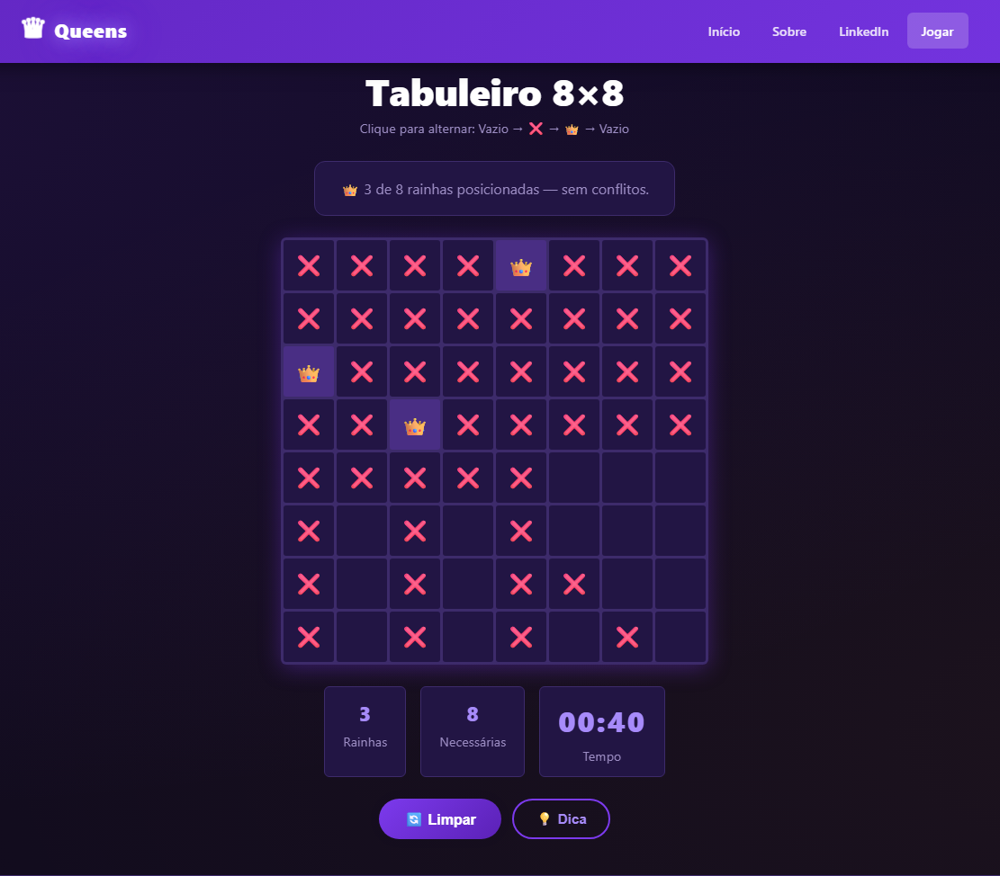
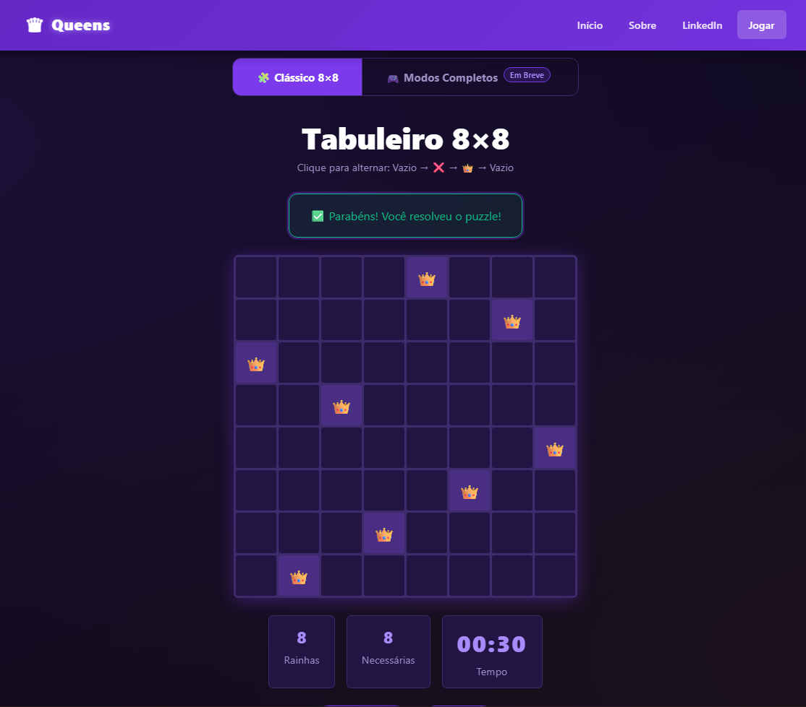

Pronto
Site do Jogo Queens


Site que começou como trabalho em grupo na faculdade e que modernizei sozinho, com JavaScript, para entrar no meu portfólio. No site já existe a versão em JavaScript funcionando. Futuramente, o jogo completo, com outros modos de jogo, também vai entrar no site.
- Tecnologias
- HTML, CSS, JavaScript
- Meu papel
- Modernização completa
Pronto
Sistema de chamados (Python)
Ferramenta em linha de comando para abertura e categorização de chamados de suporte técnico (hardware, software, redes e internet, acessos e permissões). É uma versão simples, que vou evoluir ao longo do curso de ADS.
- Tecnologias
- Python (linha de comando)
- Meu papel
- Desenvolvimento
Em melhoria
Queens (jogo)
Jogo feito em Unity, criado quase inteiramente por mim. O jogo em Unity já funciona, mas ainda é mais simples que a versão em JavaScript do site. Por isso, por enquanto, a versão jogável é a do site.
- Tecnologias
- Unity
- Meu papel
- Quase tudo
Em fase de escopo
SDN-Guard
Projeto pessoal, em fase de definição de escopo, de um controlador SDN (plano de controle) em Python, como alternativa de baixo custo a switches gerenciados, orquestrando dispositivos de rede existentes via protocolo OpenFlow. Voltado a empresas pequenas, médias e grandes.
- Tecnologias
- Python, OpenFlow, redes definidas por software
- Meu papel
- Projeto completo